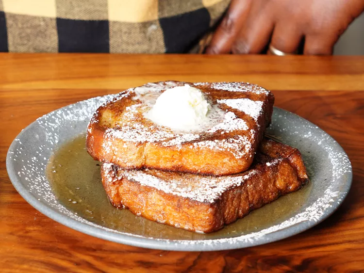

French Toast

Description
Crispy, custardy French toast with just enough sweetness and flavor to satisfy your morning cravings.
Ingredients
- 1 egg
- ¾ cup heavy cream
- 1 tsp vanilla extract
- Zest of ½ orange
- A pinch of grated nutmeg
- 2 tablespoons granulated sugar
- 1 tablespoon cinnamon
- Salt, to taste
- 1 tablespoon Cognac
- 2 slices of thick-cut bread (Pullman, challah, or brioche)
- 2 slices of thick-cut bread (Pullman, challah, or brioche)
- 3-4 tablespoons unsalted butter
- Optional: Whipped salted butter and powdered sugar for topping
Directions
- In a medium bowl, beat together the egg, cream,
orange zest, vanilla, nutmeg, Cognac, and salt,
whisking until fully incorporated. Soak the bread
for 2-3 minutes per side (or longer if desired).
- Heat the butter in a skillet over medium heat,
swirling it around to coat the bottom of the pan.
Add the bread slices and adjust the heat if you notice
the bread browning too fast. Once one side has cooked
for about a minute, flip and sprinkle a pinch of
granulated sugar over the browned crust. Repeat on
the other side, allowing the sugared sides to caramelize
in the pan for 30 seconds to a minute more, adding
more butter if needed.
- Finally, plate the slices with powdered sugar and
a dollop of whipped butter. Finish it off with maple
syrup, and your 5-star (maybe even 6-star!) French toast
breakfast is served.